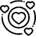
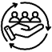
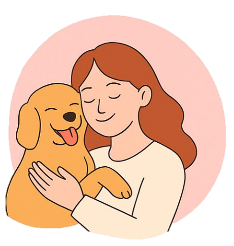

Quem somos?
O PetLar nasceu do amor pelos animais e do desejo de transformar vidas por meio da adoção responsável. Acreditamos que todo pet merece um lar cheio de carinho, e por isso unimos pessoas dispostas a amar, cuidar e oferecer uma nova chance. Mais do que uma plataforma, somos uma rede de empatia e compromisso com a causa animal.

Amor

Responsabillidade

Criamos laços com empatia e compromisso para transformar vidas - humanas e animais.